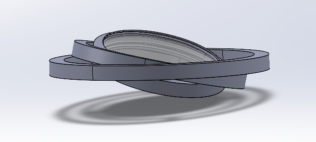
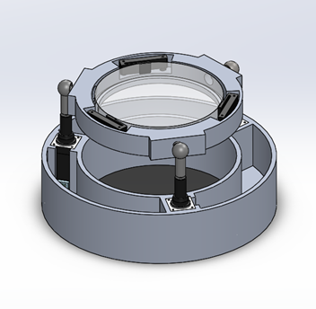

Design Process
Three concepts. One winner.
We evaluated three actuation concepts against eleven weighted engineering criteria before converging on linear actuation.
01
Gyroscope-Shaped
Three concentric rings providing independent rotation on two axes. High accuracy, but complex wiring and difficult assembly made integration challenging.
02
Tilt-Track & Rotator
Separates tilt and pitch into distinct motions, combining them via a single monodirectional tilt + 180° rotation. Eliminated due to space and torque constraints.
03
Linear Actuation ✓
Three Actuonix P8-ST linear stepper actuators at 120° intervals beneath the lens. Highest scores in ease of assembly, wiring, and manufacturability. Final score: 149/175.

Concept 01: Gyroscope-Shaped Concept 02: Tilt-Track & Rotator
Concept 02: Tilt-Track & Rotator

Concept 03: Linear Actuation